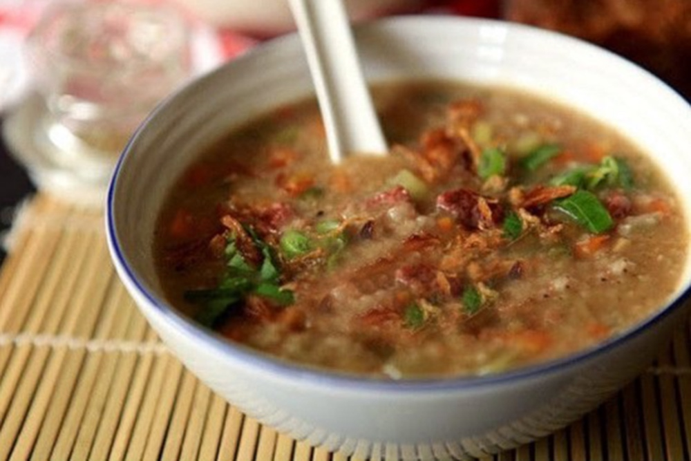

|
Udang Singgang
Udang singgang adalah masakan khas yang menjadi lauk kegemaran dizaman dulu. Memasaknya cukup sederhana yaitu udang sungai direbus diberi garam dan tidak menggunakan bumbu lain karena udang sungai yang ada diperairan berau sudah gurih dan lezat sehingga hanya direbus denga sedikit air saja sudah lezat untuk dijadikan lauk
|
Puncak Rasul, Kuliner khas Berau saat Syukuran
Puncak Rasul adalah kue dari bahan ketan disajikan menyerupai gunung dengan tiga warna yaitu kuning, merah dan putih, di puncaknya diberi telur ayam kampung. Paling atas puncak rasul, terdapat sebutir telur ayam kampung yang dimaknai sebagai jabatan manusia tertinggi, yakni Nabi Muhammad SAW. Itu sebabnya jika usai upacara syukuran telur ini menjadi rebutan masyarakat dengan harapan bisa mengikuti keteladanan Nabi Muhammad SAW, baik urusan beribadah bermasyarakat maupun berkeluarga. Sementara warna kuning kue puncak rasul diartikan sebagai simbol keluarga kerajaan Berau, sedangkan warna merah disimbolkan para pengabdi kerajaan seperti menteri dan pengawal kerajaan yang siap mengayomi masyarakat. Sedangkan warna putih disimbolkan kerukunan dalam masyarakat dilingkungan kerajaan. Selain itu nasi ketan menjadi bahan pembuatan puncak rasul, disimbolkan sebagai perekat seluruh filosofi kehidupan tersebut , agar warga rukun dalam bermasyarakat dan berkeluarga, juga taaat dalam beribadah seperti halnya Nabi Muhammad SAW .
|
|
|  |
Bubur Ancur Paddas
Bubur ini sangat kaya akan gizi, berbagai macam sayuran dan rempah-rempah menghasilkan citarasa yang luar biasa unik. Sangat gurih dan lezat, tentunya lebih enak disantap saat masih hangat. Bubur ancur paddas merupakan perpaduan antara Beras, santan kelapa, daun labu muda, jagung, daun kacang, kacang panjang dan kelapa parut yang digoreng. Sementara untuk bumbunya terdiri berbagai rempah seperti barang merah, bawah putih, ketumbar, jintan putih, merica, serai, kunyit, jahe, kemiri dan lengkuas.
Makanan tradisional ini biasa dihidangkan pada peringatan penyambutan tahun baru Islam. Biasanya pada tanggal 10 di Bulan Muharram. Selain itu bubur ini juga bisa dihidangkan setiap berbuka puasa, baik di luar maupun di bulan Ramadan.
|